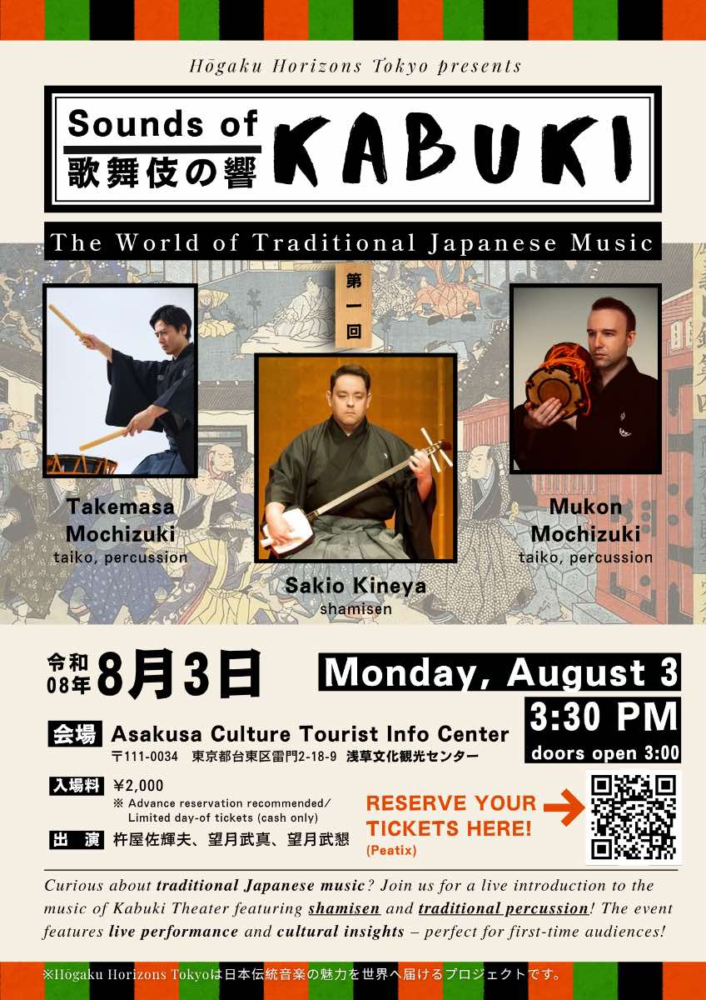
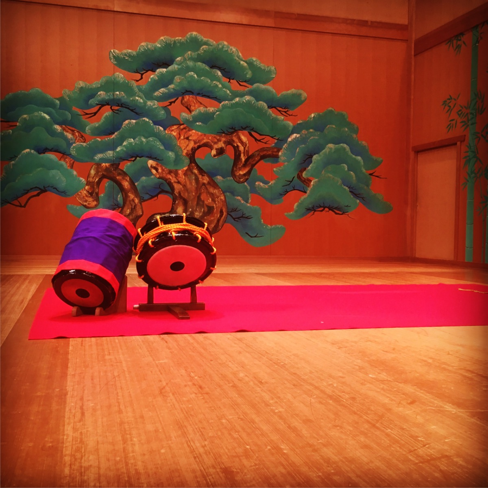
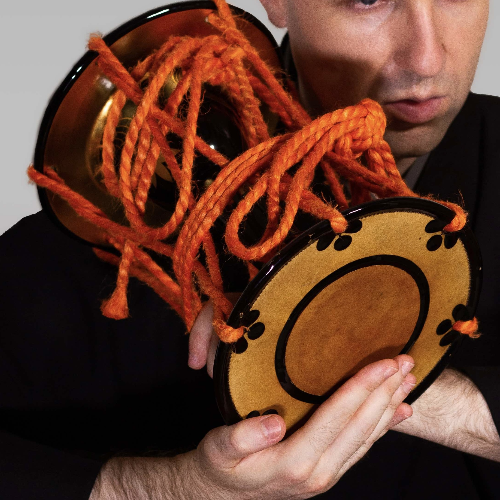
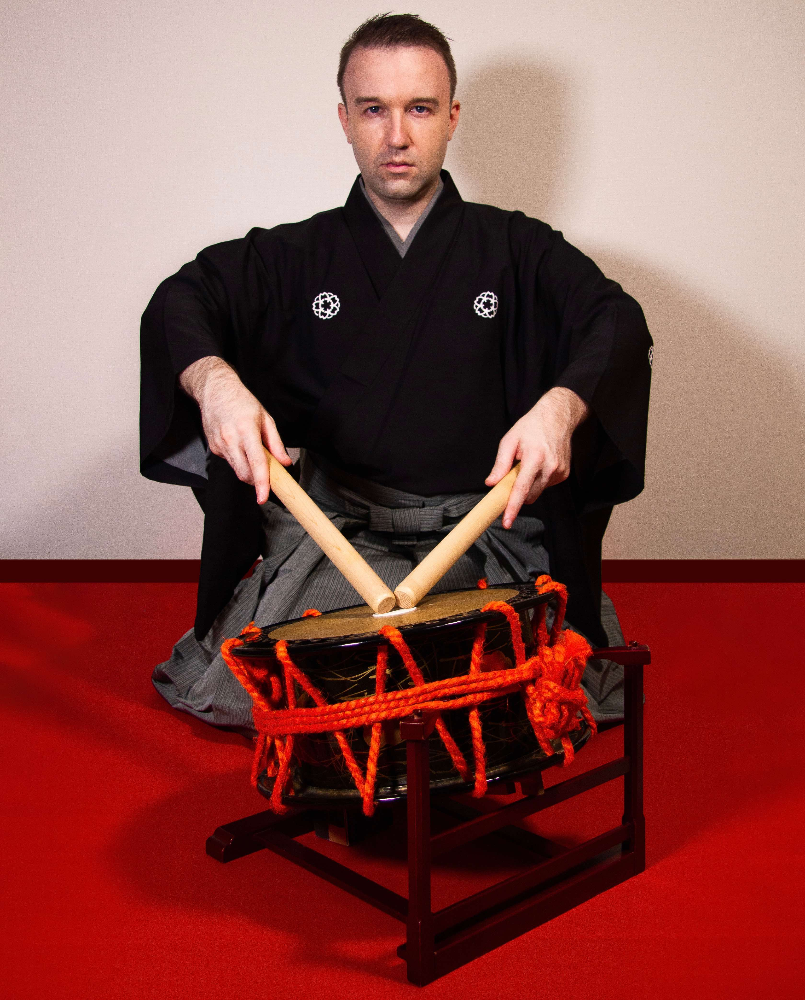
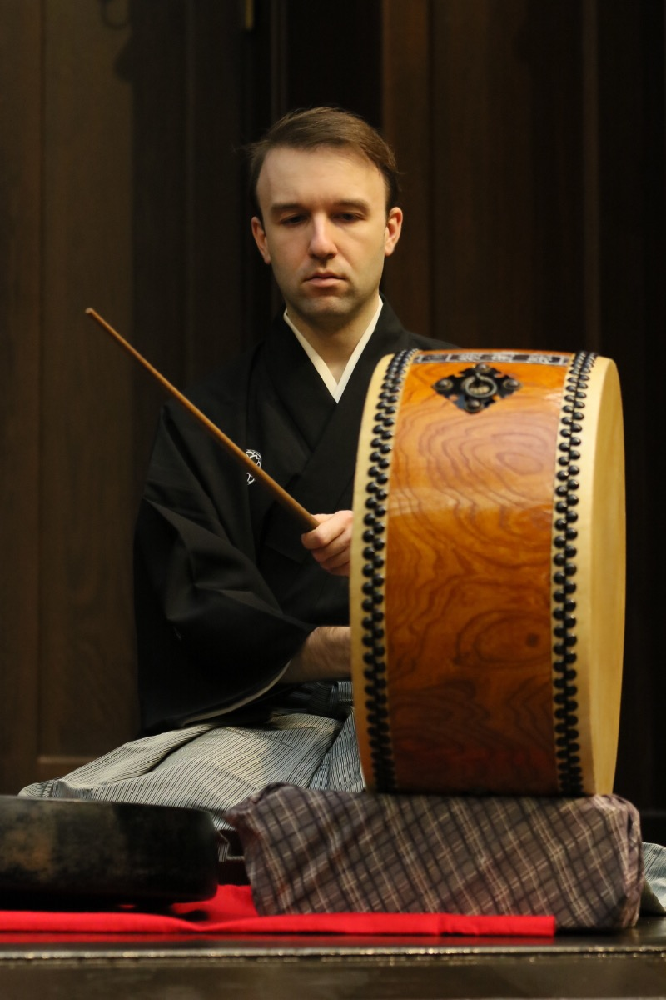

Profile

Mukon Mochizuki・J.D. Andrade
Tokyo-based performer and educator J.D. Andrade began his musical journey in classical violin before discovering taiko at Brown University. After studying under Kenny Endo in Honolulu, he moved to Japan in 2014 and immersed himself in the traditional performing arts, studying matsuri-bayashi under Kyosuke Suzuki and kabuki-bayashi under Saburo Mochizuki.
In 2019, he was awarded the stage name Mukon Mochizuki (望月武懇) — a natori in kabuki-bayashi. He has since performed at venues such as the National Theatre of Japan and Suntory Hall, and is dedicated to bringing traditional Japanese performing arts to audiences in Japan and around the world.
Upcoming Event

Sounds of Kabuki
3:30pm (doors open 3:00)
Asakusa Culture Tourist Information Center
What are taiko and ohayashi?
Wadaiko, commonly known around the world simply as taiko, refers to Japanese drumming, an art form consisting of drums, percussion, and movement. When most people think of wadaiko, they envision three main types of drums, nagadō daiko, okedō daiko, and shime daiko, each of which comes in a variety of sizes.


Ohayashi generally refers to musical accompaniment in Japanese performing arts associated with festival traditions, matsuri bayashi, and classical or traditional arts, hōgaku bayashi. These instruments, mainly specialized drums, percussion, and various flutes, support the main performers of different genres including, but not limited to, the following:
- Noh Theatre: actors wearing intricate masks perform mai in very reserved, precise movements.
- Nagauta: shamisen players and singers tell stories rooted in Japanese mythology and history.
- Nihon Buyo: dancers dressed in simple kimonos or elaborate costumes perform against a backdrop of melodic instruments and ohayashi.
- Kabuki Theatre: a “new” art form that fuses music, acting, and dance from all of the above genres.

There are a plethora of instruments that are a part of hōgaku bayashi including the following:

kotsuzumi小鼓
taiko太鼓 shinobue篠笛
shinobue篠笛
ōdaiko大太鼓 gongドラ
gongドラ